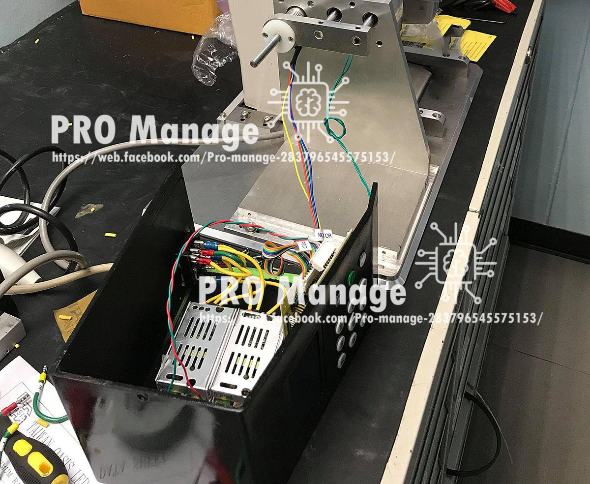
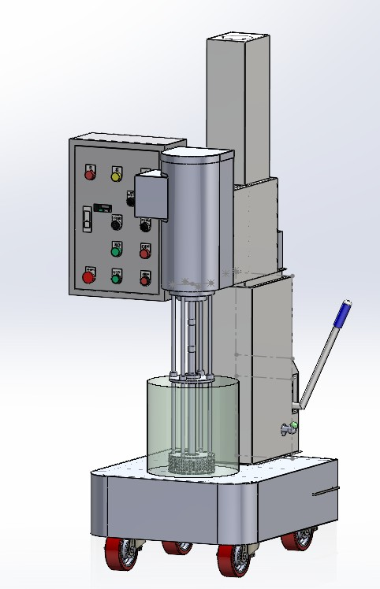
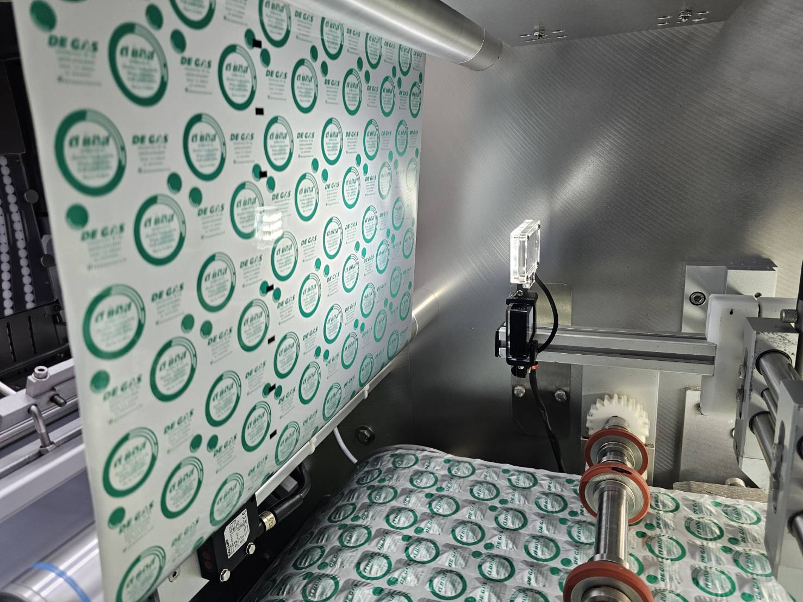
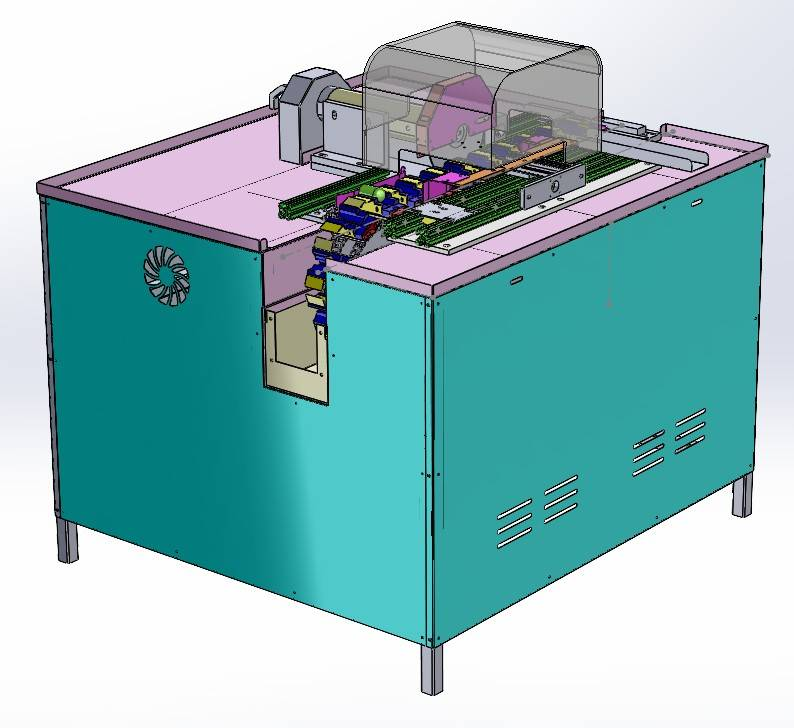
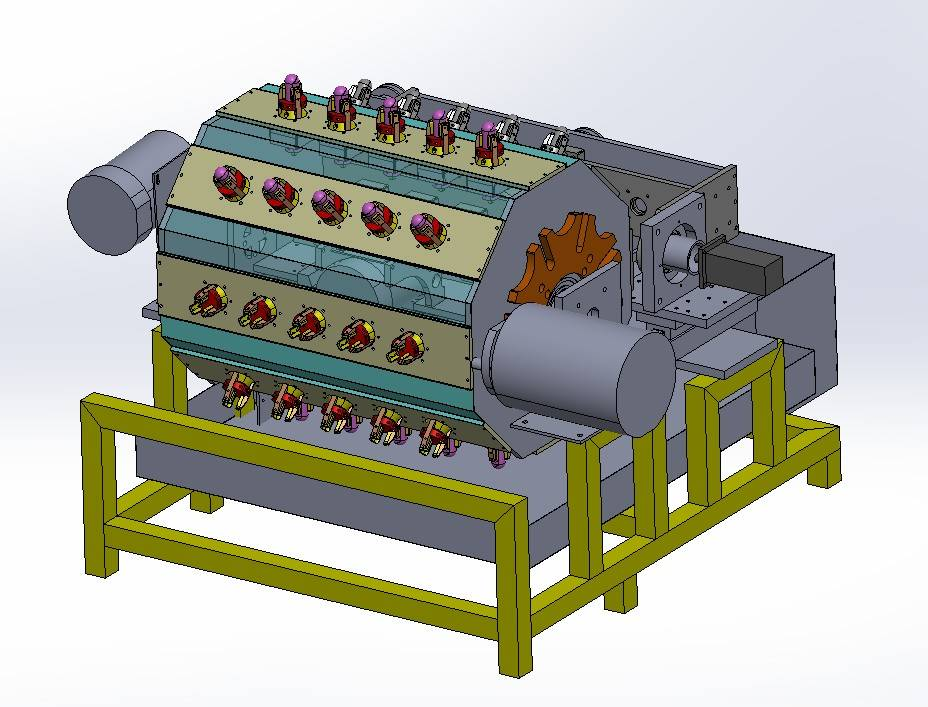

Deep Learning & Autonomous Driving
Comparing Keras Linear, Categorical, and CNN-3D models on RC-car platforms to find the best architecture for real-world steering and obstacle avoidance.
An engineer passionate about automation systems and applying AI to advance how work gets done — across industry and academia.

I work at the intersection of industrial automation, artificial intelligence, and educational technology — building systems that reduce manual workload, lower energy consumption, and make organisations more sustainable.
On the engineering side, I design and commission custom machines for pharmaceutical, optical, and consumer-product factories — replacing labour-intensive manual processes with faster, more consistent automation. On the research side, I apply deep learning to real-world hardware (autonomous vehicles, building controllers) and design microservices-based platforms that help universities operate as Green Offices aligned with the UN SDGs.
🇹🇭 Based in Bangkok, Thailand · กฤตินันท์ เพ็ชรศรี
A decade of building, fixing, and researching across academia and industry.
Office of the Dean, Faculty of Technical Education, KMUTNB
Oversees facility management, procurement budget, and energy & environmental indicators for the faculty.
Independent · Personal Practice
Helps industrial clients cut cost, time, and headcount through custom machinery, automation, and innovation.
Office of the Dean, FTE, KMUTNB
Building repair and preventive maintenance across faculty facilities.
Vending Machine Manufacturer
Developed and commissioned machines and embedded control systems for automatic vending products.
Thai Environment Systems Co., Ltd.
Operated medical-waste incineration systems for hospitals, monitoring water, smoke, and ash parameters.
Independent · Personal Practice
Designed and installed electrical and control systems for homes, buildings, and factories.
Comparing Keras Linear, Categorical, and CNN-3D models on RC-car platforms to find the best architecture for real-world steering and obstacle avoidance.
Designing electronic document management systems for higher-education faculties using REST APIs, logging, caching, and notification services.
Building smart classroom ecosystems — booking, energy monitoring, paperless workflows — aligned with Green Office and SDG reporting.
Visualization concepts for supervision systems supporting pre-service engineering teachers, in collaboration with FTE researchers.
A growing list of peer-reviewed work in AI, automation, and educational technology.
Funded research conducted at KMUTNB on AI, energy, and smart-campus systems.
Developed an RC-car platform — both hardware and software — and benchmarked multiple deep-learning models for self-driving and obstacle avoidance on a defined track.
Funded research project (2019) developing a building-energy controller to monitor and reduce electricity consumption across academic buildings.
Faculty-funded project building an electronic document management system that handles classroom and meeting-room bookings, aligned with Green Office practices.
Industrial machinery and automation systems delivered as an independent consultant — design, prototyping, and commissioning.

Optical-lens factories produce circular lenses in dozens of sizes, all requiring inspection. Manually centering each lens on the inspection rig demands a skilled operator and significant time, driving high labour cost. This machine lets any operator position lenses of any size by simply pressing a keypad to select the size — the rig auto-aligns the rest.
[Description to be added — e.g. target industry, chamber size, temperature range, sterilization method]

A homogenizer designed for mixing high-viscosity pharmaceutical liquids. The unit accepts SUS316L containers, features a programmable timer and adjustable mixing speed, and a lift mechanism for the stirring head. The entire structure is built from SUS304 stainless steel for pharmaceutical-grade hygiene.

A pharmaceutical foil-strip packaging line previously suffered from unreliable joint detection — defective strips containing joint tape were slipping into packaged boxes and reaching customers. This vision system captures the dimensions and color profile of the joint tape, then triggers a downstream actuator to eject the defective package before it leaves the line.

Most alum factories still cut raw alum to size by hand before packaging it as roll-on deodorant. This cutter requires only a single operator to load workpieces and produces no fewer than 20,000 pieces per day. The full machine is built from SUS304 stainless steel.

Before alum roll-on products are packaged, the head must be polished to a high shine — a step that previously required at least six workers. This machine reduces the operation to a single operator using a 5-head jig fixture, cutting labour cost while delivering more consistent surface quality.
Skill percentages are self-reported estimates based on years of practical experience.
For "Design Concept of Data Visualization in Developing a Supervision System for Pre-Service Engineering Teachers" — co-authored with Kanitta Hinon and Phuchit Satitpong.
Project: Controller of Electrical Energy in The Building.
Open to research collaborations, guest lectures, and consulting on automation & smart-campus projects.